Amsterdam & Rotterdam, Netherlands
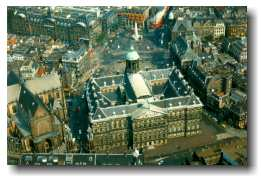
|
Amsterdam & Rotterdam, Netherlands 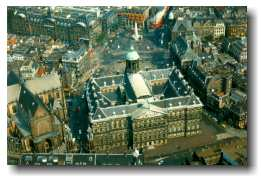 |
|
Trip #7: Saturday July 10 - Sunday July 11, 1999 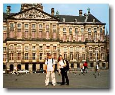At 3am Saturday morning, Karyn and I were on our way to Amsterdam. The first thing that we noticed was the different architecture of the Netherlands. A lot more modern and (don't tell any Germans) a lot more beautiful than Germany. Now I can see why Andrea hated Berlin so much. The grass just seemed greener on this side of Germany. That is, until we got to Amsterdam. Ah yes. The famous city of Amsterdam. They myth, the stories, and the rumours. The red-light district and the pot filled cafes. Expectations are large and delivery is a must to keep its rep... 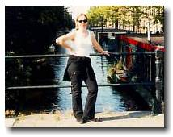In search of a hostel, we found "Bob's Youth Hostel." Running a hostel in Amsterdam, the place was guaranteed to be full every night. Customer service? Why bother. The owner was a hostile bastard. When we paid for our beds, he took our money and asked us to return after noon because the rooms weren't ready. (I don't know what needed to be ready). He didn't give a key, receipt, or anything. Nor would he store our backpacks for us. Real hokey. We were one of the first people to pay for beds that day, but apparently that didn't mean a thing. When we returned that afternoon, the owner told us that all the beds had been taken. Thanks Bob. All they had left were mattresses. And even though mattresses are supposed to be discounted, they weren't going to be for us because of where the mattresses were placed. OK, I can swallow that Bob. But by the time we returned to "Bob's Youth Hostel" ready for bed that night, someone else had claimed my mattress. Shove this #@$%$# Bob. In the end, I did end up sleeping on "my" mattress that night. 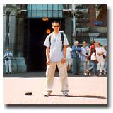We first went to the Rijksmuseum. A gigantic museum highlighting 17th century Dutch paintings. The biggest attraction is "Night Watch" by Rambrandt. This huge painting was actually bigger before. There is a smaller copy nearby showing what the original painting contained. Apparently, when they were relocating the art into a new town hall in the 18th century, they cut the edges so that it would fit through the doors. Hey, you've got to do what you've got to do. I just hate to think what would remain if they ever decide to move it into my home. It's pretty interesting how art is interpreted. Another notable artist is Vermeer. He used light shinning through windows to highlight the focus of his paintings. His brilliance is credited to his consistency with light. However, in Ruisdael's "The windmill at Wijk bij Duurstede," the contradiction in wind strength between the sail on the boat and the waves in the water is not because he screwed up. Rather, it's because he "probably painted different sections during different weather conditions and they were combined in his studio afterwards." Hmmm... 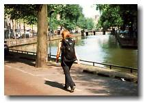So, does Amsterdam live up to its expectation? Yippers. Joints are smoked in all cafés and the red-light district is what you'd expect from the largest in the world. Unlike Hamburg's, this red-light district aims to please. That's where we went next. 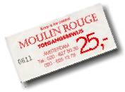We hit a live sex show. The act was very well choreographed and performed in very good taste. It was like a duo figure skating show. (The sex replaces the skates in my analogy.) When the music ended, they finished with a bow. 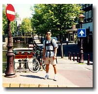As many problems as we were having with Bob and his hostel, we kept supporting his business. Maybe in hopes that extra money can be put towards renovation of the place. What good Samaritans we are :). Yes it is true. Believe it or not, "Bob's Youth Hostel" is where we had dinner. There, I sat beside another Canadian who happens to be a good friend of one of my old roommates in Ottawa. Small world. "Yo Elias, if you read this, I met your 'ol pal Maurice." 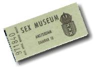The rest of the day was filled with a stop at the sex museum and meandering in the red-light district at night (with all the other hundreds of tourists). The place was filled with curiosity more than action. Only once in a while did we see someone get reeled in by one of the legal prostitutes. The next day... 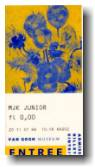After relaxing at Vondelpark for a short time, we walked towards the Van Gogh museum thinking that we'll be one of the first ones there. Wrong. There was already a huge lineup. And the place wasn't even open yet Van Gogh is one of the few artists that I'm quite familiar with, so I had a great time seeing all his paintings. The museum does a good job of revealing Van Gogh as a person. As an artist. And as a psycho. The only thing that is missing in this museum is his ear. Ouch. If you ever come here, beware of the crowd. 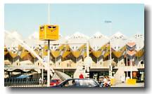OK, this is when we escaped the sex and drug scene of Amsterdam and headed to Rotterdam. A 70 min. train ride from Amsterdam. Rotterdam is a University town that redefines modern architecture. Not always practical, but their buildings/houses have style. We toured the "cube houses." A futuristic cluster of houses that looks like something you'd find in a cartoon. They're shaped like this: 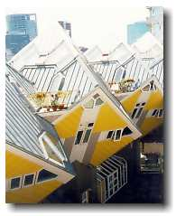____ ___ |
|
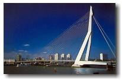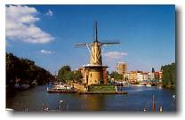Karyn was falling in love with the houses. In fact, she was falling in love with the whole city. She got jumpy and bubbly. Usually very conservative with her camera, Karyn went camera happy in Rotterdam. Our trip back to Hannover was almost problem free. We were given a wrong schedule, so we ended up taking 4 trains (yuck) and we arrived home later than expected. But we survived the fast paced weekend. |
 johnnyo@canada.com
johnnyo@canada.com